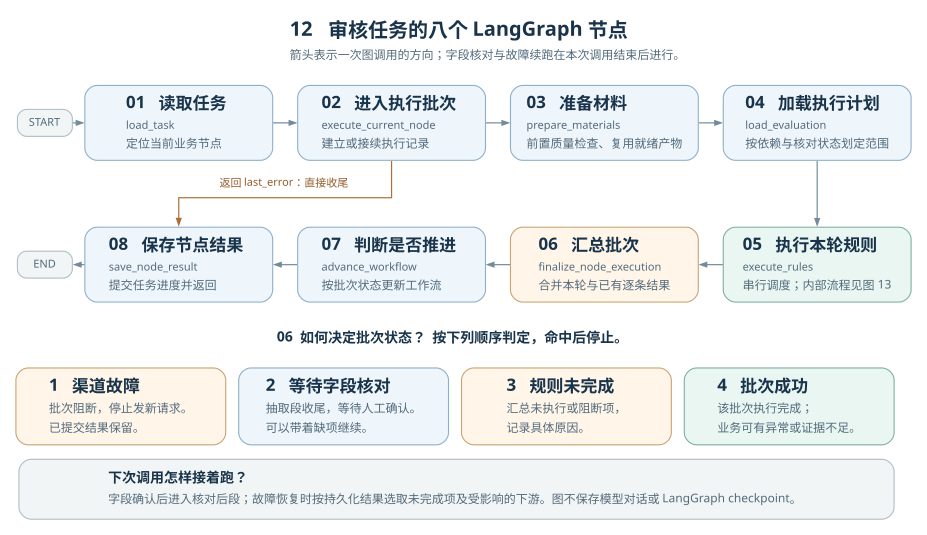
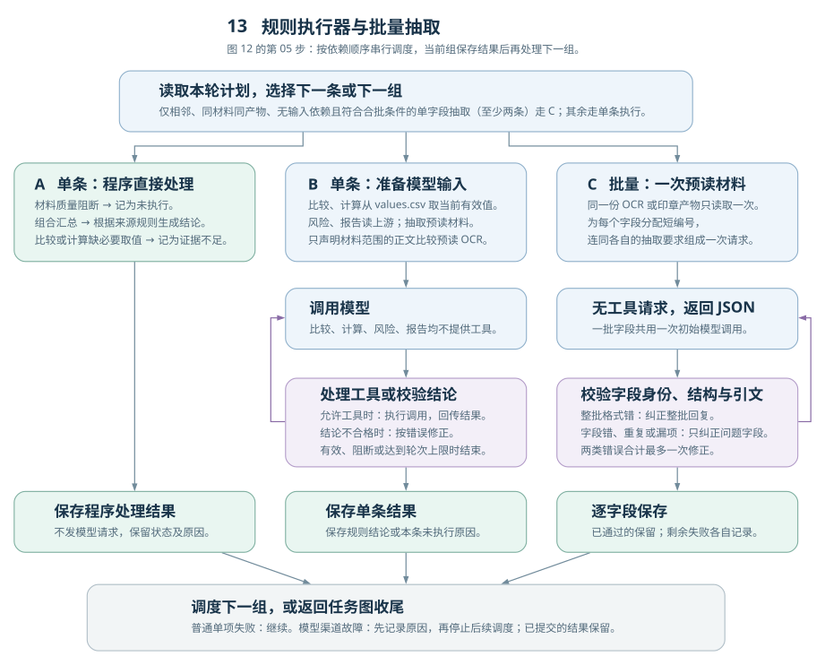
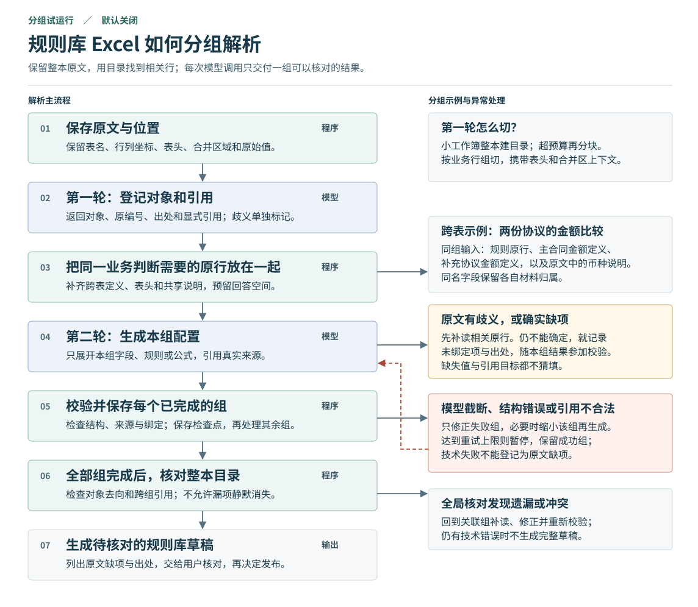

先看三条主干，再按模块查看完整约束。
下载本图 SVG ↗
场景身份与历史快照分离；方案来源和任务来源允许为空。
下载本图 SVG ↗
关系明细 · 9 组真实外键
| 编号 | 父表及被引用列 | 子表及外键列 | 父 : 子 |
|---|---|---|---|
| R01 | scenario_template (scenario_code) | import_job (scenario_code) | 0..1 : 0..N |
| R02 | scenario_version (id) | scenario_version (base_version_id) | 0..1 : 0..N |
| R03 | import_job (id) | scenario_version (import_job_id) | 0..1 : 0..1 |
| R04 | scenario_version (id) | scenario_node (scenario_version_id) | 1 : 0..N |
| R05 | scenario_template (scenario_code) | scenario_draft (scenario_code) | 1 : 0..1 |
| R06 | scenario_version (id) | audit_plan (scenario_version_id) | 0..1 : 0..N |
| R07 | scenario_node (scenario_version_id, node_code) | audit_task (scenario_version_id, current_node) | 1 : 0..N |
| R08 | audit_plan (id) | audit_task (plan_id) | 0..1 : 0..N |
| R09 | scenario_version (id) | audit_task (scenario_version_id) | 1 : 0..N |
一个材料位可以保留多个上传版本；每份上传按产物类型保存处理结果。
下载本图 SVG ↗
关系明细 · 3 组真实外键
| 编号 | 父表及被引用列 | 子表及外键列 | 父 : 子 |
|---|---|---|---|
| R01 | audit_task (id) | task_document (audit_task_id) | 1 : 0..N |
| R02 | task_document (id, audit_task_id) | document_upload (task_document_id, audit_task_id) | 1 : 0..N |
| R03 | document_upload (id, audit_task_id) | stored_artifact (document_upload_id, audit_task_id) | 1 : 0..N |
抽取候选绑定任务、材料位、上传版本与执行批次；人工复核指向具体字段版本。
下载本图 SVG ↗
关系明细 · 6 组真实外键
| 编号 | 父表及被引用列 | 子表及外键列 | 父 : 子 |
|---|---|---|---|
| R01 | node_execution (id, audit_task_id) | task_field_value (extraction_execution_id, audit_task_id) | 0..1 : 0..N |
| R02 | task_document (audit_task_id, material_key) | task_field_value (audit_task_id, material_key) | 1 : 0..N |
| R03 | audit_task (id, scenario_version_id) | task_field_value (audit_task_id, scenario_version_id) | 1 : 0..N |
| R04 | document_upload (id, audit_task_id) | task_field_value (document_upload_id, audit_task_id) | 1 : 0..N |
| R05 | task_field_value (id, audit_task_id) | manual_review (field_value_id, audit_task_id) | 1 : 0..N |
| R06 | audit_task (id) | manual_review (audit_task_id) | 1 : 0..N |
事实归属任务，可关联材料和执行批次；业务值保存在任务 CSV 中。
下载本图 SVG ↗
关系明细 · 3 组真实外键
| 编号 | 父表及被引用列 | 子表及外键列 | 父 : 子 |
|---|---|---|---|
| R01 | node_execution (id, audit_task_id) | task_fact (source_execution_id, audit_task_id) | 0..1 : 0..N |
| R02 | task_document (audit_task_id, material_key) | task_fact (audit_task_id, material_key) | 0..1 : 0..N |
| R03 | audit_task (id, scenario_version_id) | task_fact (audit_task_id, scenario_version_id) | 1 : 0..N |
确认、结果及报告归属明确任务；复合外键同时约束批次与任务一致。
下载本图 SVG ↗
关系明细 · 8 组真实外键
| 编号 | 父表及被引用列 | 子表及外键列 | 父 : 子 |
|---|---|---|---|
| R01 | audit_task (id, scenario_version_id) | node_execution (audit_task_id, scenario_version_id) | 1 : 0..N |
| R02 | scenario_node (scenario_version_id, node_code) | node_execution (scenario_version_id, node_code) | 1 : 0..N |
| R03 | node_execution (id, audit_task_id) | audit_report (node_execution_id, audit_task_id) | 0..1 : 0..N |
| R04 | audit_task (id) | audit_report (audit_task_id) | 1 : 0..N |
| R05 | node_execution (id, audit_task_id) | rule_result (node_execution_id, audit_task_id) | 1 : 0..N |
| R06 | audit_task (id) | rule_result (audit_task_id) | 1 : 0..N |
| R07 | node_execution (id, audit_task_id) | field_review_confirmation (node_execution_id, audit_task_id) | 1 : 0..N |
| R08 | audit_task (id) | field_review_confirmation (audit_task_id) | 1 : 0..N |
当前文档、修订历史、对话与冻结导出分别保存；导出通过关联记录进入真实导入作业。
下载本图 SVG ↗
关系明细 · 7 组真实外键
| 编号 | 父表及被引用列 | 子表及外键列 | 父 : 子 |
|---|---|---|---|
| R01 | rulebook_generation_job (id) | rulebook_generation_export (generation_job_id) | 1 : 0..N |
| R02 | rulebook_generation_export (id) | rulebook_generation_import (generation_export_id) | 1 : 0..N |
| R03 | import_job (id) | rulebook_generation_import (import_job_id) | 0..1 : 0..1 |
| R04 | rulebook_generation_job (id) | rulebook_generation_revision (generation_job_id) | 1 : 0..N |
| R05 | background_operation (id) | rulebook_generation_revision (operation_id) | 0..1 : 0..1 |
| R06 | background_operation (id) | rulebook_generation_message (operation_id) | 1 : 0..N |
| R07 | rulebook_generation_revision (generation_job_id, revision) | rulebook_generation_message (generation_job_id, revision) | 1 : 0..N |
单独说明没有物理 FK 的业务关联，避免与数据库约束混淆。
下载本图 SVG ↗
Excel 编制与导入、场景发布、方案创建、任务执行的责任边界。
下载本图 SVG ↗
单文件质量限制、材料并行处理、字段核对等待和同批次继续。
下载本图 SVG ↗
八步任务图、逐规则模型与工具循环，以及持久化恢复边界。
下载本图 SVG ↗
任务图的八个节点、提前收尾分支，以及图外字段确认与续跑边界。
下载本图 SVG ↗

展开 execute_rules 的单条与合批路径，标出模型修正、工具回传和渠道阻断。
下载本图 SVG ↗

分组试运行，默认关闭：按业务关联分组解析，区分原文缺项和需要重试的技术失败。
下载本图 SVG ↗
